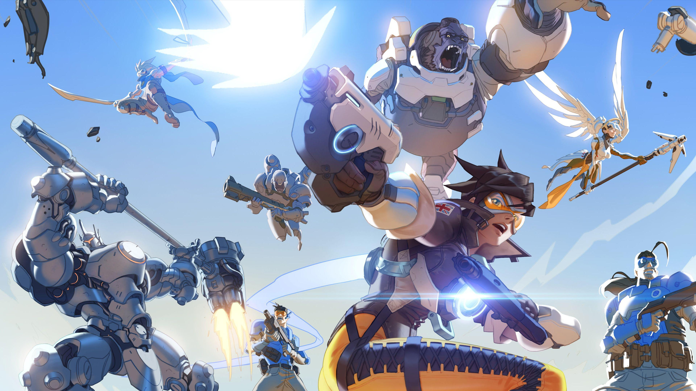
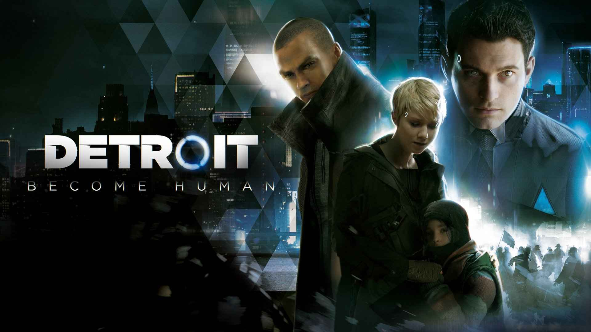
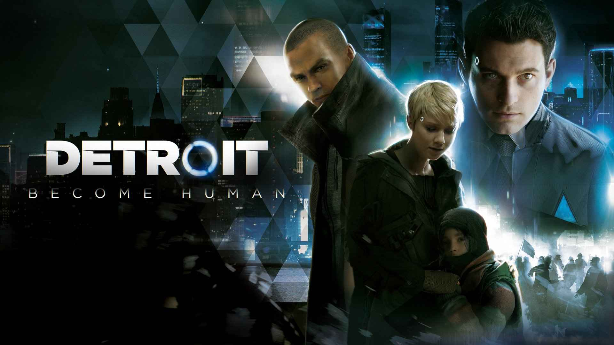

Passion
Gaming
Depuis petit, je joue aux jeux vidéos. C'est une passion qui me permet de mêler plaisir et compétition, en repoussant constamment mes limites.
Esprit de Compétition
J'aime le défi et l'optimisation des performances que l'on trouve dans les jeux compétitifs. Atteindre un haut niveau demande de la rigueur, de l'analyse et de la persévérance.
- Overwatch : J'ai atteint le classement Top 500 des joueurs en Europe, sur une base de plus de 10 millions de joueurs.
- Rocket League : Je fais partie du Top 5% des meilleurs joueurs au niveau mondial.


Exploration & Divertissement
Au-delà de la compétition, j'apprécie énormément les jeux solo qui permettent simplement de me divertir et de m'immerger dans des univers riches et des histoires captivantes. C'est le côté plaisir et évasion du jeu vidéo.
- Uncharted
- Cyberpunk 2077
- Ghost of Tsushima
- Detroit: Become Human


 
